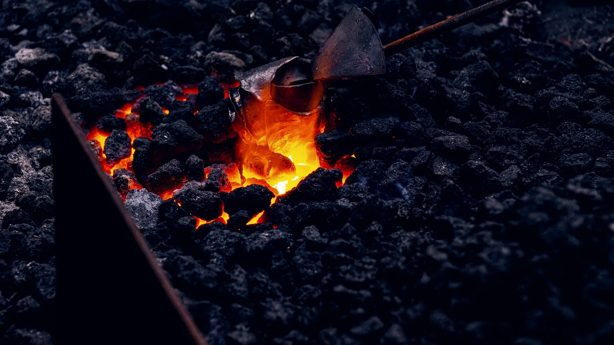
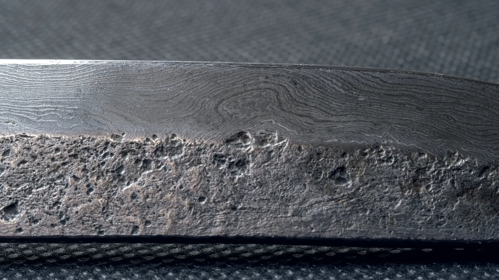

Cleave Ford · differentially hardened
The line is the proof.
A hamon is what a blade looks like when only its edge was hardened: hard steel where it cuts, softer steel behind it, and a visible boundary between the two that no amount of polishing invents. We put the line where the steel decides to put it.
20 °C Stock
It starts as a bar.
Six millimetres by forty, cut to length on the bandsaw. Three steels come into this shop and no others, because three is the number we can know properly.
All three are shallow-hardening: quenched fast, they harden only as deep as the quench reaches, which is the whole reason a temper line exists at all. Stainless will not do this. Neither will anything with enough alloy in it to harden through. The limitation is the feature.
- 26C3
- 1.25 % C · water
- W2
- 1.05 % C, V · water
- 1084
- 0.84 % C · fast oil
- Bar section
- 6.0 × 40 mm
- Blades a year
- about 90
1250 °C Fold weld
Seven bars become one.
Pattern-welded blades start as a stack — seven bars, alternating 1084 and 15N20, wired together and brought to welding heat until the boundaries close. Then it is drawn out, cut, folded back on itself and welded again.
Every fold doubles the layer count and halves the layer. That sounds like it should keep getting better. It does not, and the table says where it stops.

The fold table
7 bars · 42 mm billet
- Folds
- 3
- Layers
- 56
- Each layer
- 750 µm
Drawn out, cut, folded back and welded again.
1100 °C Forge
Drawn out under the hammer.

The mill's trip hammer still runs off the shaft, and it does the heavy drawing — the tang, the taper, the rough profile. Everything after that is a hand hammer, because the last third of the shape decides how the blade will move in a hand and a machine cannot feel that.
Forging stops below 850 °C. Worked colder than that, high-carbon steel stops moving and starts tearing, and the tears do not show up until the quench, when the blade cracks and the week is gone.
A blade leaves the anvil about 2 mm thicker and 8 mm longer than it will finish. The rest comes off on the grinder, cold and slowly.
900 °C Normalise
Three heats to forget the forging.
Forging leaves the grain coarse and uneven — large where the steel sat hot, fine where the hammer worked it. A coarse-grained blade is a brittle blade, and no amount of careful hardening later will fix it.
So the blade is brought up three times and allowed to cool still in air, each heat lower than the last. Each cycle refines what the one before it left. It is the least visible half-day in the whole process and the one that decides whether the knife survives being dropped.
- Cycle one
- 900 °C, air
- Cycle two
- 860 °C, air
- Cycle three
- 820 °C, air
- Then
- anneal, 24 h in vermiculite
- Grinding
- annealed, before hardening
795 °C → 28 °C Harden
Clay, then water.
Furnace cement goes on the spine thick and on the edge barely at all, with fingers of clay — ashi — reaching down toward the edge. The clay is not decoration and it is not a mask. It is insulation: it decides how fast each part of the blade is allowed to lose heat.
The blade goes into the water edge first at 795 °C and comes out three seconds later. The bare edge cools past 400 °C fast enough to trap the steel hard. The clayed spine does not, and stays soft enough to bend rather than snap.
The boundary between those two rates is the hamon. We do not draw it. We decide where the clay goes, and the steel does the rest — which is why no two are the same, and why one in nine cracks in the tank and starts again as bar stock.
Section at the heel · Gyuto 210 · thickness drawn at 5×
200 °C Temper
Two hours at straw.
Straight out of the water the edge is glass: hard, and useless. Tempering trades a little of that hardness back for the toughness that stops it chipping. Two cycles of one hour at 200 °C, cooled to room temperature in between.
The oven has a thermocouple, but the check is an offcut polished bright and heated alongside the blade. Steel grows an oxide film as it warms and the film's colour is a thermometer you can read across a workshop. We stop at the first swatch. Everything past it is a knife that has been made softer than it needed to be.
Oxide film on polished carbon steel · we stop at 200 °C
20 °C Edge
Polished until the line shows.
Hardened steel and soft steel take a polish differently, and that is the only reason you can see a hamon at all. The blade goes up through the stones — 400, 1000, 3000, then natural stone and finger-stones along the edge — until the two structures refuse to reflect the same way.
A short etch brings it up. It is a reveal, not a treatment: the boundary was formed in the quench tank months earlier and everything after is just making it visible.
The edge goes on last, at about 15 degrees a side, finished on a strop. It arrives sharp enough that the first thing we tell you is where to keep it.
Every blade leaves with the offcut it was tempered against, so you can see the colour we stopped at.

A hamon a polish can remove was never a hamon.Ren Alder · forge
Four shapes, made repeatedly
The blades.
Gyuto
The one that gets used every day. Flat enough through the middle to push-cut, curved enough at the tip to rock.
£520 · 22 weeks 135 mm · W2Petty
Small, light, and the blade where the hamon is most active — there is no room on it to hide anything.
£340 · 22 weeks 175 mm · San maiBunka
A hard core in a soft jacket. The jacket takes the knocks and hides the line; a fair trade if the knife travels.
£610 · 22 weeks 270 mm · 1084Sujihiki
Long, thin and tough. Made in the toughest of the three steels because a slicer that long will be levered eventually.
£590 · 22 weeksCommissions
Tell us what you cut.
A commission starts as a written specification, not a deposit. Set the steel, the length, the grind and the handle, read the numbers it produces, and send it to us. We will tell you where we disagree before anyone pays anything.